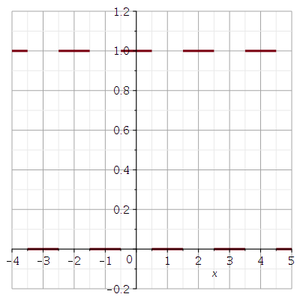
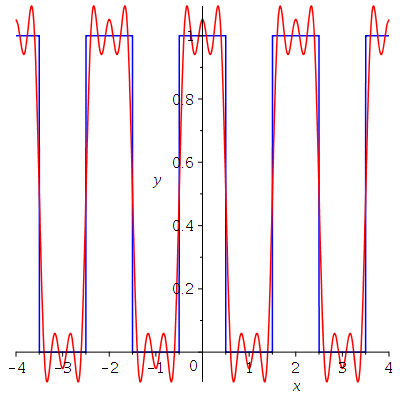
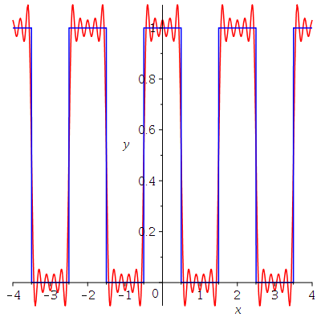
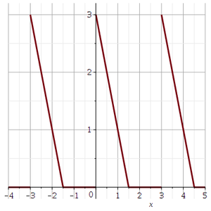
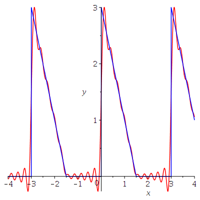

Nous n'avons pas l'intention d'être excessivement rigoureux dans ce document sur les séries de Fourier. Pour un traitement rigoureux, le lecteur devrait consulter un des excellents manuels d'analyse.
La série de Fourier d'une fonction \(f:[-L,L] \to \mathbb{R}\) est la série
\[ f \sim a_0 + \sum_1^\infty ( a_n \cos(n\pi x/L) + b_n \sin(n\pi x/L) ) \]où
\[ a_0 = \frac{1}{2L} \int_{-L}^L f(x) \text{d}x \quad , \quad a_n = \frac{1}{L} \int_{-L}^L f(x) \cos(n\pi x/L) \text{d}x \]et
\[ b_n = \frac{1}{L} \int_{-L}^L f(x) \sin(n\pi x/L) \text{d}x \]Si \(f\) est une fonction continue par morceaux sur l'intervalle \([-L,L]\), nous avons que
\[ \frac{f(x^+) + f(x^-)}{2} = a_0 + \sum_1^\infty ( a_n \cos(n\pi x/L) + b_n \sin(n\pi x/L) ) \]pour tous \(x \in [-L,L]\). En particulier, si \(f\) est continue au point \(x =a\), alors la série converge vers \(f(a)\).
Si \(f :\mathbb{R} \to \mathbb{R}\) est une fonction périodique de période \(2L\), alors les intégrales ci-dessus peuvent être calculées sur tous intervalles de la forme \([a-L,a+L]\).
Si \(f\) est une fonction paire (i.e. \(f(-x) = f(x)\) pour tous \(x\)), alors \(b_n = 0\) pour tous \(n\) et la série de Fourier devient la série de Fourier en cosinus
\[ f \sim a_0 + \sum_1^\infty a_n \cos(n\pi x/L) \]où
\[ a_0 = \frac{1}{L} \int_0^L f(x) \text{d}x \quad \text{et} \quad a_n = \frac{2}{L} \int_0^L f(x) \cos(n\pi x/L)\text{d}x \]Note: Nous pouvons toujours prolonger une fonction \(f:[0,L] \to \mathbb{R}\) à une fonction paire sur l'intervalle \([-L.L]\) par \(f(x) = f(-x)\) pour \(x \in [-L,0[\).
Si \(f\) est une fonction impaire (i.e. \(f(-x) = -f(x)\) pour tous \(x\)), alors \(a_n = 0\) pour tous \(n\) et la série de Fourier devient la série de Fourier en cosinus
\[ f \sim \sum_1^\infty b_n \sin(n\pi x/L) \]où
\[ b_n = \frac{2}{L} \int_0^L f(x)\sin(n \pi x/L) \text{d} x \]Note: Nous pouvons toujours prolonger une fonction \(f:]0,L] \to \mathbb{R}\) à une fonction impaire définie sur l'intervalle \([-L.L]\) par \(f(x) = -f(-x)\) pour \(x \in [-L,0[\) et \(f(0)=0\). On peut modifier la valeur d'une fonction à l'origine (en un point) sans changer les valeurs des intégrales ci-dessus.
Il existe des librairies dans Maple pour calculer les séries de Fourier. Cependant, elles ne font pas parties de la distribution officielle de Maple. Elles se trouvent sur le site . Une de ces librairies est OrthogonalExpansions. Nous n'utiliserons pas de librairies spécialisées dans ce document. Il est facile de calculer les séries de Fourier sans faire usage d'une librairie spécialisée.
Note: Nous définisons dans les exemples qui suivent des procédures un peu plus complexes que celles que nous avons vues jusqu'à présent. Nous fournissons plus d'information sur la création de procédure dans Maple dans le document .
Exemple: Considérons la fonction continue par morceaux définie par la procédure dans Maple suivante.
> fe := proc(x)
local y:
if type(x,numeric) then
y:=abs(x)-floor(abs(x)/2)*2:
if ( y < 1/2 or y > 3/2 ) then
RETURN(1);
else
RETURN(0);
fi;
else
'fe'(x);
fi;
end proc;
\[
\begin{split}
& fe := proc (x)\\
& \qquad local\ y: \\
& \qquad if\ type(x, numeric)\ then \\
& \qquad \qquad y := abs(x)-2*floor((1/2)*abs(x))\\
& \qquad \qquad if\ y < 1/2\ or\ 3/2 < y\ then\ RETURN(1)\ else\ RETURN(0)\ end\ if \\
& \qquad else \\
& \qquad \qquad ('fe')(x) \\
& \qquad end\ if \\
& end\ proc
\end{split}
\]
La procédure ci-dessus est la définition la moins fragile d'une fonction mais nous n'avons pas à être si rigoureux si notre fonction est pour une tâche spécifique et un usage limité, et que nous connaissons le type d'arguments qui seront fournis à la fonction. Une autre façon plus simple de définir fe est avec la fonction piecewise de Maple.
> fe := x -> piecewise( abs(x)-floor(abs(x)/2)*2 < 1/2 or abs(x)-floor(abs(x)/2)*2 > 3/2,1,0);\[ fe := x \mapsto \begin{cases} 1 & \qquad |x| -2 \lfloor \frac{|x|}{2} \rfloor < \frac{1}{2} \text{ or } \frac{3}{2} < |x| -2 \lfloor \frac{|x|}{2} \rfloor \\ 0 & \qquad \qquad \text{otherwise} \end{cases} \]
Le graphe de cette fonction est tracé ci-dessous.
> plot(fe(x), x = -4 .. 5, thickness = 3, discont = true, gridlines = true, view = [-4 .. 5, -.2 .. 1.2]);

En regardant le graphe de fe, nous constatons que la fonction est périodique de période \(2\) (donc \(L=1\)) et c'est une fonction paire. Ainsi, nous utilisons une série de Fourier en cosinus pour obtenir une approximation de cette fonction. Puisque nous avons seulement besoin d'intégrer sur l'intervalle \([0,1]\), nous n'avons pas besoin de la définition complète de fe, Nous pouvons plutôt utiliser la fonction suivante .
> fe0L := x->piecewise(x<=1/2,1,0);\[ fe := x \mapsto \begin{cases} 1 & \qquad x \leq \frac{1}{2} \\ 0 & \qquad \text{otherwise} \end{cases} \]
Cette fonction est égale à la fonction fe sur le domaine d'intégration \([0,L]\). Il n'est pas nécessaire d'utiliser la fonction fe0L mais, si nous avons beaucoup de calculs à faire. il est toujours bon d'avoir la forme la plus simple pour faire les calculs.
Les coefficients de la série de Fourier en cosinus sont donnés par la procédure suivante.
> an:=proc(n)
if (n=0) then
RETURN( int(fe0L(x),x=0..1) );
else
RETURN( 2*int(fe0L(x)*cos(n*Pi*x),x=0..1));
fi;
end proc;
\[
\begin{split}
& an := proc (n) \\
& \qquad if\ n = 0\ then \\
& \qquad \qquad RETURN(int(fe0L(x), x = 0 .. 1)) \\
& \quad else \\
& \qquad \qquad RETURN(2*(int(fe0L(x)*cos(n*Pi*x), x = 0 .. 1))) \\
& \qquad end\ if \\
& end\ proc;
\end{split}
\]
Nous calculons les \(11\) premiers coefficients que nous sauvegardons dans la variable AN pour un usage ultérieur.
> AN:= seq( evalf(an(i)),i=0..10);
Notons que les indices de la séquence AN débutent à \(1\) selon les règles de Maple. Cela aura un effet sur l'énoncée des formules pour les séries de Fourier dans Maple.
La série de Fourier en cosinus tronquée à \(n+1\) termes est donnée par la fonction ci-dessous.
> FCS:=(x,n)->sum(AN[j+1]*cos(j*Pi*x),j=0..n);\[ FCS := (x, n) \mapsto \sum_{j=0}^{n} AN_{j+1} \cos(j\pi x) \]
Nous traçons dans une même figure le graphe de la fonction fe et sa série de Fourier en cosinus tronquée à six termes; c'est-à-dire, \(n = 5\).
> plot1:=plot(fe(x),x=-4..4,color=blue):
> plot2:=plot(FCS(x,5),x=-4..4,color=red):
> plots[display]({plot1,plot2},labels=[`x`,`y`]);

> plot3:=plot(FCS(x,10),x=-4..4,color=red):
> plots[display]({plot1,plot3},labels=[`x`,`y`]);

La valeur de la série de Fourier en cosinus à un point \(x=a\) où fe est discontinue est (fe(x-)+fe(x+))/2 comme il est prédit.
Note: Nous observons le phénomène de Gibb. Peux importe le nombre de termes que nous utilisons pour la série de Fourier, près d'un point de discontinuité, la différence entre la valeur de la fonction et la série de Fourier tronquée n'est jamais plus petite qu'une certaine valeur fixe qui dépend de la fonction.
Exemple: Nous considérons maintenant la fonction définie dans Maple par la procédure suivante.
> ff := proc(x)
local y:
if type(x,numeric) then
y:=x - floor(x/3)*3;
if ( y<3/2 ) then
RETURN(3 - 2*y);
else
RETURN(0);
fi;
else
'ff'(x);
fi;
end proc;
\[
\begin{split}
& ff := proc (x) \\
&\qquad local\ y;\\
&\qquad if\ type(x, numeric)\ then\\
&\qquad \qquad y := x-3*floor((1/3)*x); if\ y < 3/2\ then\ RETURN(3-2*y)\ else\ RETURN(0)\ end\ if\\
& else\\
& \qquad\qquad ('ff')(x)\\
& end\ if\\
& end proc
\end{split}
\]
Le graphe de cette fonction est tracé ci-dessous
> plot(ff(x), x = -4 .. 5, thickness = 3, discont = true, gridlines = true, view = [-4 .. 5, -.2 .. 3.2]);

En regardant le graphe de la fonction ff, nous constatons que la fonction est périodique de période \(3\) mais elle n'est pas paire ou impaire. Nous utilisons la forme complète de la séries de Fourier pour obtenir une approximation de la fonction ff.
Comme nous avons fait pour l'exemple précédent, nous pourrions définir une fonction ff0L un peu plus simple qui est égale à la fonction ff sur l'intervalle d'intégration \([-1.5,1.5]\). Cependant, puisque ff(x) = 0 pour \(x\in [-1.5,0]\), les intégrales ont seulement besoin d'être évaluées sur l'intervalle \([0, 1.5]\). Donc, nous pouvons seulement utiliser la fonction ff0L définie ci-dessous.
> ff0L := 3-2*x:
Les coefficients de Fourier sont calculés par les procédures suivantes.
> an:=proc(n)
if (n=0) then
RETURN((1/3)*int(ff0L,x=0..1.5));
else
RETURN((2/3)*int((ff0L)*cos(2*n*Pi*x/3) ,x=0..1.5));
fi;
end proc;
\[
\begin{split}
& an := proc(n)\\
&\qquad if\ n = 0\ then \\
&\qquad \qquad RETURN(1/3*int(ff0L, x = 0 .. 1.5))\\
&\qquad else \\
&\qquad \qquad RETURN(2/3*int(ff0L*cos(2/3*n*Pi*x), x = 0
.. 1.5)) \\
&\qquad end\ if\\
& end\ proc
\end{split}
\]
> bn:=proc(n) RETURN((2/3)*int((ff0L)*sin(2*n*Pi*x/3), x=0..1.5)); end proc;\[ bn := proc(n)\ RETURN(2/3*(int(ff0L*sin(2/3*n*Pi*x), x = 0 .. 1.5)))\ end\ proc \]
Nous calculons les \(21\) premiers coefficients que nous sauvegardons dans les variables AN et BN pour un usage ultérieur.
> AN:=seq(evalf(an(i)),i=0..10): > BN:=seq(evalf(bn(i)),i=1..10):
La série de Fourier de la fonction ff tronquée à \(2n+1\) termes est donnée par la fonction suivante.
> FS:=(x,n)-> sum(AN[j+1]*cos(2*j*Pi*x/3),j=0..n) + sum(BN[j]*sin(2*j*Pi*x/3),j=1..n);\[ FS := (x, n) \mapsto \sum_{j=0}^n AN_{j+1} \cos\left(\frac{2j \pi x}{3}\right) )+ \sum_{j=1}^n BN_j \sin\left(\frac{2j\pi x}{3}\right) \]
Nous traçons dans une même figure le graphe de la fonction ff et sa série de Fourier tronquée à 21 termes; c'est-à-dire, \(n = 10\).
> plot1:=plot(ff(x),x=-4..4,color=blue):
> plot2:=plot(FS(x,10),x=-4..4,color=red):
> plots[display]({plot1,plot2},labels=[`x`,`y`]);
